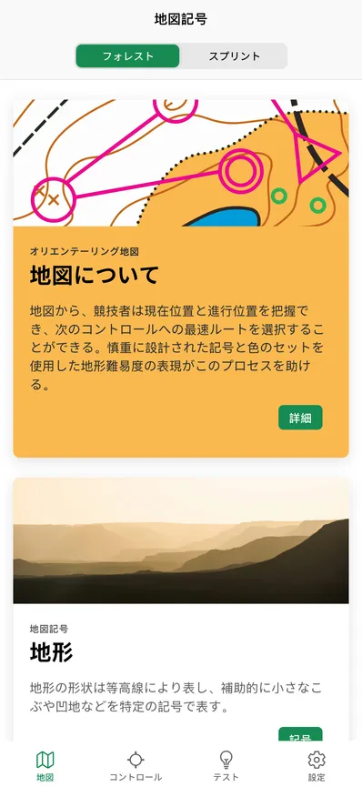
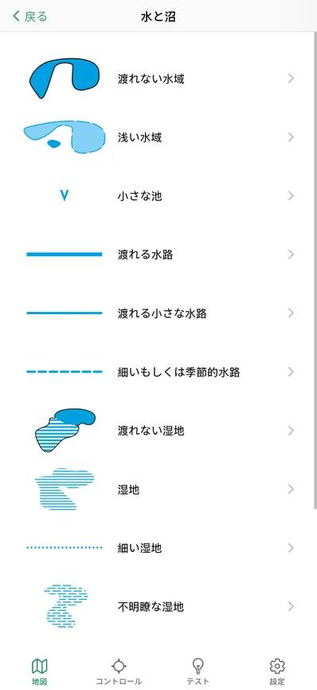
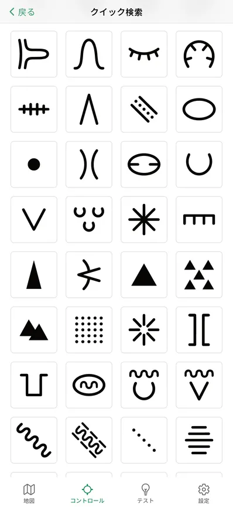
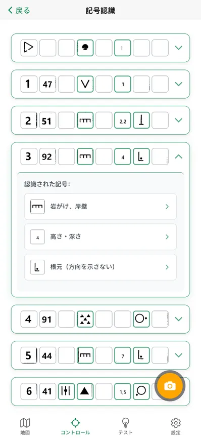
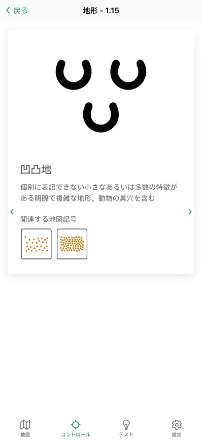
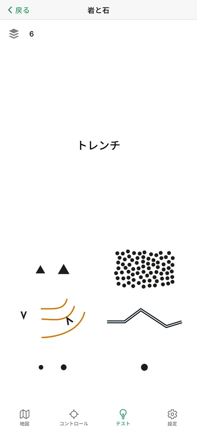
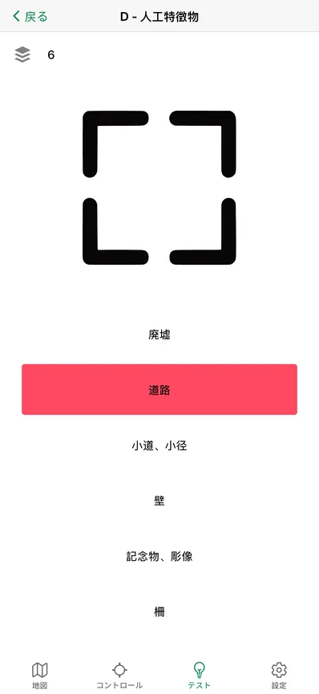
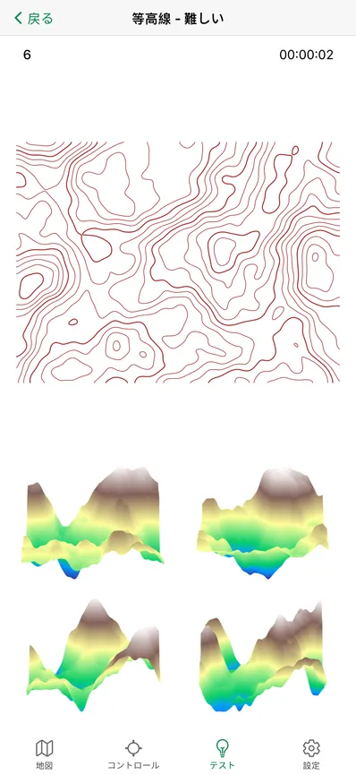

Orisym
明確にオリエンテーリング
オリエンテーリングシンボルの学習、テスト、カタログ










なぜOrisymか？
- 各オリエンテーリングシンボルの意味を詳細に学習できます
- 知識をテストし、現在のレベルを確認し、スキルを向上させることができます
- 地図記号とコントロール位置のシンボルのカタログで、それらの意味の詳細な説明が見つかります
- 両方のタイプのシンボルの関連性とその関係を発見できます
- 等高線による地形認識を通じて空間認識を向上させることができます
- アプリの実行にはインターネットが不要で、オフラインで動作します